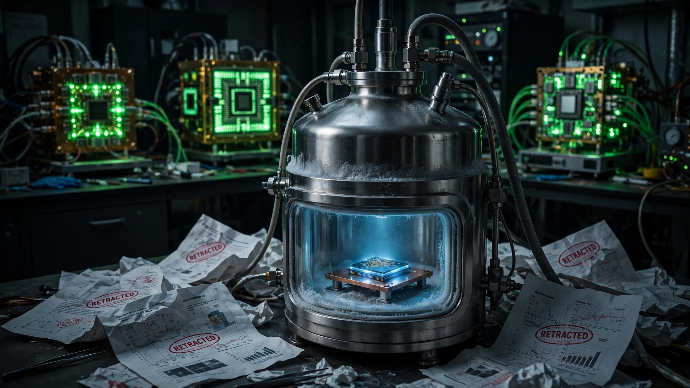

Microsoft's Quantum Program Has a 33% Retraction Rate on Its Key Papers. It Just Promised a Working Machine by 2029.
Two retracted Nature papers, two editorial alerts, and a new formal critique make five high-profile challenges across roughly six major publications. No other quantum computing lab has retracted anything. Google's Willow chip already operates below the error-correction threshold. The cost-per-demonstrated-logical-qubit math is merciless.

Five. That is the number of high-profile scientific challenges to Microsoft's quantum computing publications over the past eight years. Two full retractions from Nature. Two editorial alerts in Nature and Science. And now, on June 24, a formal critique published in Nature by University of St. Andrews physicist Henry Legg, who found that Microsoft's gap-detection software "yielded inconsistent and misreported outcomes" and that a broader dataset Microsoft itself released showed "random noise, with no clear evidence of the gap Microsoft claimed to find." Microsoft published a reply defending its work alongside Legg's critique, and the original paper is not being retracted. But the pattern is now too large to ignore.
A Publication Record Unlike Any Other
Here is the complete record of Microsoft's major topological qubit publications in top-tier journals, mapped against subsequent challenges.
| Year | Publication | Claim | Outcome |
|---|---|---|---|
| 2018 | Nature | Demonstrated quantized Majorana conductance | Retracted (2021): "insufficient scientific rigour" |
| 2021 | Nature | Follow-up Majorana evidence | Retracted: data could reflect material imperfections, not topological physics |
| 2023 | Nature | Topological gap protocol | Editorial alert flagged |
| 2024 | Science | Extended topological device | Editorial alert flagged |
| 2025 | Nature | Software to identify topological gaps in nanowires | Formal critique by Legg (June 2026): inconsistent, misreported outcomes |
Two retractions out of approximately six major publications is a 33% retraction rate. For context, Nature's overall retraction rate across all fields runs approximately 0.04% of published articles. Microsoft's quantum program retracts papers at roughly 825 times the journal-wide average. No other major quantum computing group, including Google, IBM, Quantinuum, or IQM, has retracted a single high-profile paper in the field.
What the Competition Demonstrated While Microsoft Was Retracting
On December 9, 2024, Google published a Nature paper reporting below-threshold quantum error correction on its Willow chip. A 101-qubit distance-7 surface code achieved a logical error rate of 0.143% per cycle, with an error suppression factor of Λ = 2.14 when increasing the code distance by two. Translation: adding more qubits actually makes the computation more reliable, not less. That had never been demonstrated in a real device before. The logical qubit lived 2.4 times longer than the best physical qubit on the same chip. Flight, not a PowerPoint about flight.
On June 9, 2026, IQM Quantum Computers announced barbell codes, a family of quantum error-correcting codes achieving up to 1,000 times lower logical error rates than the surface code while requiring 8 times fewer physical qubits. IQM's Constellation processor architecture gives each qubit 12 nearest neighbors instead of the standard 4, enabling high-performance error correction without the complex long-range couplers that plague most QLDPC implementations. Hardware validation is pending, but the theoretical result is peer-reviewed and architecturally specific, not a simulation in a vacuum.
Quantinuum, using trapped-ion qubits rather than superconducting circuits, has demonstrated two-qubit gate fidelities exceeding 99.9%. IBM is scaling its superconducting approach with a $10 billion quantum investment and has already deployed its 1,121-qubit Condor processor.
Cost per Demonstrated Logical Qubit
This is the number nobody wants to calculate.
Microsoft's quantum investment over two decades includes its Lyngby, Denmark facility (DKK 1 billion, approximately $150 million for that site alone), Station Q at UC Santa Barbara (founded 2005), labs in Sydney and Delft, and twenty years of researcher salaries for a team of physicists, materials scientists, and nanofabrication engineers. Conservative external estimates place total program spending between $1 billion and $2 billion. A precise figure is not public because Microsoft does not break out quantum spending in its financial disclosures.
Against that investment, Microsoft has demonstrated zero logical qubits operating below the error-correction threshold. The cost per demonstrated logical qubit is mathematically undefined, because the denominator is zero.
| Company | Approach | Est. Quantum Investment | Logical Qubits Below Threshold | Cost per Demonstrated Logical Qubit |
|---|---|---|---|---|
| Microsoft | Topological (Majorana) | $1–2B (est.) | 0 | Undefined (∞) |
| Superconducting (transmon) | $500M–1B (est.) | ≥1 (Willow, Dec 2024) | $500M–1B | |
| IBM | Superconducting (transmon) | $10B (announced) | Demonstrated error mitigation, sub-threshold pending | Pending |
| IQM | Superconducting (barbell codes) | €260M (total funding) | Theoretical (1,000x vs surface code) | Pending hardware |
| Quantinuum | Trapped ion | $600M+ (est.) | Demonstrated >99.9% gate fidelity | Pending logical qubit demo |
The comparison is not perfectly fair. Google has been working on superconducting qubits for roughly 10 years compared with Microsoft's 20 on topological qubits. But that reinforces the point: Google achieved below-threshold error correction in half the time by choosing a qubit technology that actually exists in the physical world. Topological qubits remain contingent on the existence of Majorana zero modes, which Microsoft has claimed to observe but which no independent lab has replicated.
The 2029 Promise vs. Expert Assessment
On June 3, 2026, Microsoft unveiled its Majorana 2 chip and accelerated its quantum timeline to 2029. Chetan Nayak, who leads Microsoft's quantum hardware efforts, told Science: "We've talked about a scalable quantum machine on the 2033 timescale, and we believe that these kinds of accelerations can bring that into 2029."
Independent experts disagree. Winfried Hensinger, a physicist who builds trapped-ion quantum computers at the University of Sussex, told Physics World that the topological approach is "probably 20 to 30 years behind the other platforms." Sergey Frolov at the University of Pittsburgh, who has published detailed analyses of Microsoft's data, calls it a "sustained pattern of unreliable claims."
If Hensinger's estimate is even roughly correct, Microsoft's 2029 target misses by 17 to 27 years. Topological qubits would reach competitive parity with today's superconducting and trapped-ion systems somewhere between 2046 and 2056. In the meantime, those competitors are not standing still.
The Jesus in the Toast
Legg's June 2026 critique introduces a metaphor worth quoting in full. Microsoft's gap-detection software works by scanning hundreds of parameter combinations on a nanowire chip and reporting when it finds a voltage configuration producing a measured gap. Legg found that the software reported gaps inconsistently and that a larger, unpublished dataset from Microsoft showed no pattern distinguishable from random noise.
"If you're looking into something which is essentially just random physics, eventually you will find the Jesus in your toast," Legg told Reuters.
Microsoft's Nayak responded with his own analogy: "It's almost like arguing, is flight possible or not? And then you're standing next to an airplane. Well, why don't you hop in and take a ride?" The trouble with that analogy is that nobody questions whether airplanes fly. Multiple physicists question whether Microsoft's device does what Microsoft says it does. You can stand next to the airplane, but if the wings keep falling off in peer review, "hop in" is not a scientific argument.
Why Microsoft Persists
Microsoft's rationale is not irrational. If topological qubits work as theorized, they would be inherently more stable than competing approaches because quantum information would be encoded in the topology of the system rather than in fragile quantum states. A topological qubit would resist errors the way a knot resists untying. That stability could reduce the number of physical qubits needed for error correction by orders of magnitude, potentially making million-qubit machines practical without the enormous overhead that surface codes demand.
Google's Willow chip needs roughly 1,000 physical qubits to create one reliable logical qubit. A working topological qubit might need 10 to 100. At the scale of a million-logical-qubit machine, that difference is the difference between building something the size of a building and something the size of a server rack.
Microsoft sits on over $100 billion in cash. It can afford to be wrong. The question is whether the scientific establishment should keep certifying claims from a program that has retracted 33% of its key papers.
What This Analysis Does Not Show
Several limitations deserve explicit statement. First, Microsoft's total quantum spending is estimated from public disclosures (the DKK 1B Denmark figure, staffing levels, facility costs) rather than confirmed financials, because Microsoft does not report quantum spending separately. Second, the 33% retraction rate applies to a small sample of approximately six papers, which amplifies any single outcome. A program that publishes more papers will mechanically show a lower rate even with the same absolute number of retractions. Third, the cost-per-logical-qubit estimates for Google and others are also external estimates. Google does not disclose its quantum budget separately either. Fourth, IQM's barbell codes have not been validated in hardware yet. A 1,000x improvement in simulation does not guarantee a 1,000x improvement on a physical chip, where fabrication defects, crosstalk, and thermal noise intervene. Finally, the fact that topological qubits have not been independently replicated does not prove they are impossible. Science often takes decades to confirm or reject extraordinary claims.
Strongest Counterargument
Microsoft's defenders make a legitimate point: all current quantum approaches, including Google's, face daunting scaling challenges. Google demonstrated below-threshold error correction with 101 qubits. A commercially useful quantum computer will need millions. Scaling a surface code to that level requires cooling infrastructure, wiring complexity, and classical compute for real-time decoding that no one has solved. If topological qubits work, they could leapfrog a decade of surface-code scaling pain. Dismissing the approach because of early-stage failures is the same logic that would have killed superconducting qubits after early experiments showed discouragingly short coherence times. And the Nature critique, while serious, does not prove that Microsoft's results are wrong. It shows that one external analysis of one published dataset produced different results. Microsoft's defense, published in Nature alongside the critique, argues that the software works well enough that they use it routinely to configure actual quantum chips. If those chips were not producing real topological effects, the company's internal development would presumably stall, but by Microsoft's own account, it is accelerating.
What You Can Do
If you evaluate quantum computing investments: Weight demonstrated milestones over promises. Google's Willow and IQM's barbell codes have published, peer-reviewed data on error rates. Microsoft's topological claims have been formally challenged five times. Ask any quantum vendor: how many of your published claims have been independently replicated?
If you follow quantum policy: The Trump administration allocated $2 billion to quantum computing with a 2028 goal for a "scientific quantum system." Track where that money goes. If a significant portion funds topological approaches based on papers that have been retracted or formally challenged, that is a policy question worth asking your representatives about.
If you are a researcher in the field: Read Google's Willow paper (PMID: 39653125) and Legg's Nature critique side by side with Microsoft's reply. The methodological questions Legg raises about gap-detection software apply to any scanning algorithm that searches large parameter spaces for small signals in noisy data. If you work with similar methods, his analysis is a useful diagnostic.
The Bottom Line
Microsoft has spent roughly $1 to $2 billion over two decades pursuing a quantum computing approach that has produced zero logical qubits below the error-correction threshold and five formal challenges to its published evidence. Google achieved below-threshold operation in roughly half the time on a different architecture. IQM published a theoretical path to 1,000x error rate improvement this month. The gap between what Microsoft promises and what it has demonstrated is not closing. It is widening, because the competitors are running while Microsoft is debating whether its particle is real.
Sources
- Reuters, "Microsoft's quantum computing technology called into question, again" (June 24, 2026)
- Google Quantum AI et al., "Quantum error correction below the surface code threshold," Nature (2024). DOI: 10.1038/s41586-024-08449-y
- IQM Quantum Computers, "Novel Quantum Error Correction Approach Toward Fault-Tolerant Quantum Computing," BusinessWire (June 9, 2026)
- Science, "Doubling down on controversial claims, Microsoft accelerates quantum computing plans" (June 2026)
- Microsoft, "Microsoft opens state-of-the-art Quantum Lab in Lyngby, Denmark" (November 2024)
- Physics World, "Experts weigh in on Microsoft's topological qubit claim" (February 2025)
- Reuters, "Microsoft reveals new quantum chip, says it will have systems by 2029" (June 3, 2026)